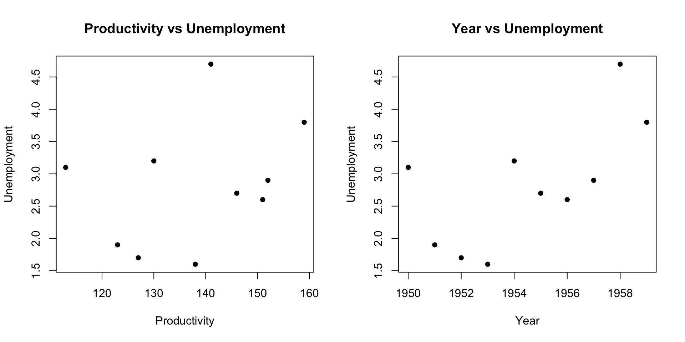

Statistical Models
Lecture 8
Lecture 8:
The Maths of
Regression
Outline of Lecture 8
- Simple linear regression
Part 5:
Simple linear
regression
Simple linear regression
Motivation
- Model: Suppose to have two random variables X and Y
- X models observed values
- Y models a response
- Goal of Regression: Learn the distribution of
Y | X
- Y | X allows to predict values of Y from values of X
Simple linear regression
Motivation
Note: To learn Y|X one would need joint distribution of (X,Y)
Problem: The joint distribution of (X,Y) is unknown
Data: We have partial knowledge on (X,Y) in the form of
- paired observations (x_1,y_1) , \ldots, (x_n,y_n)
- (x_i,y_i) is observed from (X,Y)
Goal:Use the data to learn Y|X
Simple linear regression
Motivation
Least-Squares:
Naive solution to regression problem
Find a line of best fit y = \hat \alpha + \hat \beta x
Such line explains the data, i.e., y_i \ \approx \ \hat \alpha + \hat \beta x_i
Simple linear regression
Motivation
Drawbacks of least squares:
Only predicts values of y such that (x,y) \, \in \, \text{ Line}
Ignores that (x_i,y_i) comes from joint distribution (X,Y)

Simple linear regression
Motivation
Linear Regression:
Find a regression line R(x) = \alpha + \beta x
R(x) predicts most likely value of Y when X = x

Simple linear regression
Motivation
Linear Regression:
We will see that regression line coincides with line of best fit R(x) = \hat \alpha + \hat \beta x
Hence regression gives statistical meaning to the line of best fit

Regression function
Definition
Suppose given two random variables X and Y
- X is the predictor
- Y is the response
Definition
The regression function of Y on X is the conditional expectation
R \colon \mathbb{R}\to \mathbb{R}\,, \qquad \quad R(x) := {\rm I\kern-.3em E}[Y | X = x]
Regression function
Interpretation
Idea
The regression function
R(x) = {\rm I\kern-.3em E}[Y | X = x]
predicts the most likely value of Y when we observe
X = x
Notation: We use the shorthand {\rm I\kern-.3em E}[Y|x] := {\rm I\kern-.3em E}[Y | X = x]
The regression problem
Assumption: Suppose to have n observations (x_1,y_1) \,, \ldots , (x_n, y_n)
- x_i observed from X
- y_i observed from Y
Problem
From (x_1,y_1) \,, \ldots , (x_n, y_n) learn a regression function
{\rm I\kern-.3em E}[Y | x]
which explains the observations, that is,
{\rm I\kern-.3em E}[Y | x_i] \ \approx \ y_i \,, \qquad \forall \, i = 1 , \ldots, n
Simple linear regression
Regression problem is difficult without prior knowledge on {\rm I\kern-.3em E}[Y | x]
A popular model is to assume that {\rm I\kern-.3em E}[Y | x] is linear
Definition
The regression function of Y on X is linear if there exist \alpha and \beta s.t.
{\rm I\kern-.3em E}[Y | x] = \alpha + \beta x \,, \qquad \forall \, x \in \mathbb{R}
\alpha and \beta are called regression coefficients
The above regression is called simple because only 2 variables are involved
What do we mean by linear?
Note: We said that the regression is linear if {\rm I\kern-.3em E}[Y | x ] = \alpha + \beta x In the above we mean linearity wrt the parameters \alpha and \beta
Examples:
Linear regression of Y on X^2 is {\rm I\kern-.3em E}[Y | x^2 ] = \alpha + \beta x^2
Linear regression of \log Y on 1/X is {\rm I\kern-.3em E}[ \log Y | x ] = \alpha + \beta \frac{1}{ x }
Simple linear regression
Model Assumptions
Suppose to have n observations (x_1,y_1) \,, \ldots , (x_n, y_n)
- x_i observed from X
- y_i observed from Y
Definition
For each i = 1 , \ldots, n we denote by Y_i a random variable with distribution
Y | X = x_i
Assumptions:
- Predictor is known: The values x_1, \ldots, x_n are known
Simple linear regression
Model Assumptions
Normality: The distribution of Y_i is normal
Linear mean: There are parameters \alpha and \beta such that {\rm I\kern-.3em E}[Y_i] = \alpha + \beta x_i
Common variance (Homoscedasticity): There is a parameter \sigma^2 such that {\rm Var}[Y_i] = \sigma^2
Independence: The random variables Y_1 \,, \ldots \,, Y_n are independent
Characterization of the Model
- Assumptions 1–5 look quite abstract
- The following Proposition gives a handy characterization
Proposition
Assumptions 1-5 are satisfied if and only if
Y_i = \alpha + \beta x_i + \varepsilon_i
for some random variables
\varepsilon_1 , \ldots, \varepsilon_n \,\, \text{ iid } \,\, N(0,\sigma^2)
- The terms \varepsilon_i are called errors
Characterization of the Model
Proof
By Assumption 2 we have that Y_i is normal
By Assumption 3 and 4 we have
{\rm I\kern-.3em E}[Y_i] = \alpha + \beta x_i \,, \qquad \quad {\rm Var}[Y_i] = \sigma^2
- Therefore
Y_i \sim N(\alpha + \beta x_i, \sigma^2)
Characterization of the Model
Proof
- Define the random variables
\varepsilon_i := Y_i - (\alpha + \beta x_i)
By Assumption 5 we have that Y_1,\ldots,Y_n are independent
Therefore \varepsilon_1,\ldots,\varepsilon_n are independent
Since Y_i \sim N(\alpha + \beta x_i, \sigma^2) we conclude that
\varepsilon_i \sim N(0,\sigma^2)
Likelihood function
Definition
Let X_1, \ldots, X_n be continuous rv with joint pdf
f = f(x_1, \ldots, x_n | \theta)
depending on a parameter \theta \in \Theta. The likelihood function of the random vector (X_1, \ldots, X_n) for a given sample (x_1, \ldots, x_n) is
L \colon \Theta \to \mathbb{R}\,, \qquad \quad L(\theta | x_1,\ldots, x_n ) := f(x_1, \ldots, x_n | \theta)
Likelihood function
Proposition
Suppose Assumptions 1–5 hold. The likelihood function of linear regression is
L(\alpha,\beta, \sigma^2 | y_1, \ldots, y_n ) = \frac{1}{(2\pi \sigma^2)^{n/2}} \, \exp \left( -\frac{\sum_{i=1}^n(y_i-\alpha - \beta x_i)^2}{2\sigma^2} \right)
Likelihood function
Proof
- Recall that
Y_i \sim N( \alpha + \beta x_i , \sigma^2 )
- Therefore the pdf of Y_i is
f_{Y_i} (y_i) = \frac{1}{\sqrt{2\pi \sigma^2}} \exp \left( -\frac{(y_i-\alpha-\beta{x_i})^2}{2\sigma^2} \right)
Likelihood function
Proof
- Since Y_1,\ldots, Y_n are independent we obtain \begin{align*} L(\alpha,\beta, \sigma^2 | y_1, \ldots,y_n) & = f(y_1,\ldots,y_n) \\ & = \prod_{i=1}^n f_{Y_i}(y_i) \\ & = \prod_{i=1}^n \frac{1}{\sqrt{2\pi \sigma^2}} \exp \left( -\frac{(y_i-\alpha-\beta{x_i})^2}{2\sigma^2} \right) \\ & = \frac{1}{(2\pi \sigma^2)^{n/2}} \, \exp \left( -\frac{\sum_{i=1}^n(y_i- \alpha - \beta x_i)^2}{2\sigma^2} \right) \end{align*}
Model Summary
- Simple linear regression of Y on X is the function
{\rm I\kern-.3em E}[Y | x] = \alpha + \beta x
- Suppose given the observations from (X,Y)
(x_1,y_1) , \ldots , (x_n, y_n)
Model Summary
- Denote by Y_i the random variable
Y | X = x_i
- We suppose that Y_i has the form
Y_i = \alpha + \beta x_i + \varepsilon_i
- The errors \varepsilon_1,\ldots, \varepsilon_n are iid N(0,\sigma^2)
The linear regression problem
Problem
From (x_1,y_1) \,, \ldots , (x_n, y_n) learn a linear regression function
{\rm I\kern-.3em E}[Y | x] = \alpha + \beta x
which explains the observations, that is, \begin{equation} \tag{3}
{\rm I\kern-.3em E}[Y | x_i] \ \approx \ y_i \,, \qquad \forall \, i = 1 , \ldots, n
\end{equation}
Question
How do we enforce (3)?
Answer
- Recall that Y_i is distributed like
Y | x_i
- Therefore
{\rm I\kern-.3em E}[Y | x_i] = {\rm I\kern-.3em E}[Y_i]
- Hence (3) holds iff
\begin{equation} \tag{4} {\rm I\kern-.3em E}[Y_i] \ \approx \ y_i \,, \qquad \forall \, i = 1 , \ldots, n \end{equation}
Answer
- If we want (4) to hold, we need to maximize the joint probability
P(Y_1 \approx y_1, \ldots, Y_n \approx y_n)
- This means choosing parameters \hat \alpha, \hat \beta, \hat \sigma which maximize the likelihood function
\max_{\alpha,\beta,\sigma} \ L(\alpha,\beta, \sigma^2 | y_1, \ldots, y_n )
Maximizing the likelihood
Theorem
Suppose Assumptions 1–5 hold and assume given n observations (x_1,y_1), \ldots, (x_n,y_n). The maximization problem
\max_{\alpha,\beta,\sigma} \ L(\alpha,\beta, \sigma^2 | y_1, \ldots, y_n )
admits the unique solution
\hat \alpha = \overline{y} - \hat \beta \, \overline{x} \,, \qquad
\hat \beta = \frac{S_{xy}}{S_{xy}} \,, \qquad
\hat{\sigma}^2 = \frac{1}{n} \sum_{i=1}^n \left( y_i - \hat \alpha - \hat \beta x_i \right)^2
Note: The coefficients \hat \alpha and \hat \beta are the same of least-squares line!
Maximizing the likelihood
Proof of Theorem
The \log function is strictly increasing
Therefore the problem \max_{\alpha,\beta,\sigma} \ L(\alpha,\beta, \sigma^2 | y_1, \ldots, y_n ) is equivalent to \max_{\alpha,\beta,\sigma} \ \log L( \alpha,\beta, \sigma^2 | y_1, \ldots, y_n )
Maximizing the likelihood
Proof of Theorem
Recall that the likelihood is L(\alpha,\beta, \sigma^2 | y_1, \ldots, y_n ) = \frac{1}{(2\pi \sigma^2)^{n/2}} \, \exp \left( - \frac{\sum_{i=1}^n(y_i-\alpha - \beta x_i)^2}{2\sigma^2} \right)
Hence the log–likelihood is \log L(\alpha,\beta, \sigma^2 | y_1, \ldots, y_n ) = - \frac{n}{2} \log (2 \pi) - \frac{n}{2} \log \sigma^2 - \frac{ \sum_{i=1}^n(y_i-\alpha - \beta x_i)^2 }{2 \sigma^2}
Maximizing the likelihood
Proof of Theorem
Suppose \sigma is fixed. In this case the problem \max_{\alpha,\beta} \ \left\{ \frac{n}{2} \log (2 \pi) - \frac{n}{2} \log \sigma^2 - \frac{ \sum_{i=1}^n(y_i-\alpha - \beta x_i)^2 }{2 \sigma^2} \right\} is equivalent to \min_{\alpha, \beta} \ \sum_{i=1}^n(y_i-\alpha - \beta x_i)^2
This is the least-squares problem! Hence the solution is \hat \alpha = \overline{y} - \hat \beta \, \overline{x} \,, \qquad \hat \beta = \frac{S_{xy}}{S_{xy}}
Maximizing the likelihood
Proof of Theorem
Substituting \hat \alpha and \hat \beta we obtain \begin{align*} \max_{\alpha,\beta,\sigma} \ & \log L(\alpha,\beta, \sigma^2 | y_1, \ldots, y_n ) = \max_{\sigma} \ \log L(\hat \alpha, \hat \beta, \sigma^2 | y_1, \ldots, y_n ) \\[10pt] & = \max_{\sigma} \ \left\{ - \frac{n}{2} \log (2 \pi) - \frac{n}{2} \log \sigma^2 - \frac{ \sum_{i=1}^n(y_i-\hat\alpha - \hat\beta x_i)^2 }{2 \sigma^2} \right\} \end{align*}
It can be shown that the unique solution to the above problem is \hat{\sigma}^2 = \frac{1}{n} \sum_{i=1}^n \left( y_i - \hat \alpha - \hat \beta x_i \right)^2
This concludes the proof
Least-squares vs Linear regression
Linear regression and least-squares give seemingly the same answer
| Least-squares line | y = \hat \alpha + \hat \beta x |
|---|---|
| Linear regression line | {\rm I\kern-.3em E}[Y | x ] = \hat \alpha + \hat \beta x |
Question: Why did we define regression if it gives same answer as least-squares?
Least-squares vs Linear regression
Answer: There is actually a big difference
- Least-squares line y = \hat \alpha + \hat \beta x
- Just a geometric object
- Can only predict pairs (x,y) which lie on the line
- Ignores statistical nature of the problem
- Regression line {\rm I\kern-.3em E}[Y | x ] = \hat \alpha + \hat \beta x
- Statistical model for Y|X via the estimation of {\rm I\kern-.3em E}[Y | x]
- Can predict most likely values of Y given the observation X = x
- Can test how well the linear model fits the data